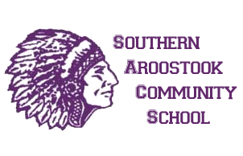

I graduated from Southern Aroostook Community School in 2017 and was a two sport athlete. I played soccer and basketball and was still able to graduate as the valedictorian of my class. I had some hardships to overcome when in high school also. My father was diagnosed with leukemia when I was a freshman. Dealing with this news made playing sports and keeping up with all my homework difficult but my parents were very strong and helped me through these difficult times. My dad ended up getting a bone marrow transplant and we are all blessed to have him healthy today. Junior year of high school I was confronted by another test. I was diagnosed with Crohn's Disease and was very sick for almost a year. I still managed to play sports and keep my grades up from the guidance from my parents and self will.

Below is a link to the college I attend